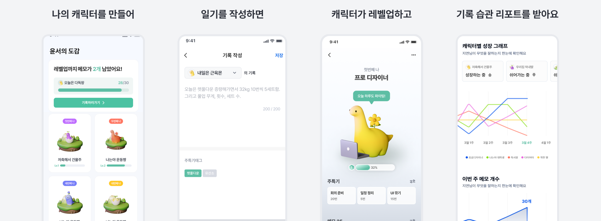

일기의 가치는 알지만 평소에는 쓰지 않는 MZ세대의 WAU 확보가 목표였습니다

NEXTERS 24기에서 팀 6인(PM, 프로덕트 디자이너, 프론트엔드·백엔드 개발자)을 이끌며 8주간 신규 서비스를 기획했습니다(2024.01.06 – 03.02).
설문 응답자의 81.3%가 여러 개의 페르소나를 가지고 있었고, "일기 좋은 거 알아도 평소에는 쓸 마음이 안 생긴다"는 반응처럼 수요는 있지만 작성으로 이어지지 않는 상태였습니다.설문 50명 미만, 인터뷰 8명 (넥스터즈 페이지 확인 예정)
캐릭터를 나눠 일기를 쓰는 구조가 유효한지 먼저 확인하기 위해, 같은 구조의 유사 서비스를 잠재 유저 6명이 2주간 사용한 뒤 인터뷰했습니다. 여러 페르소나로 나눠 쓸 수 있다는 점은 좋았지만 너무 정적이어서 동기부여가 되지 않았고, 페르소나 분리 작성은 유지하되 동기부여 장치로 레벨업 시스템을 더하기로 결정했습니다.
캐릭터 생성·일기 작성·레벨업 3개 핵심 기능으로 4주 차에 1차 MVP 웹을 배포했고(웹 + PWA), 서비스 유입률은 72%였습니다.
| 레이어 | 지표 |
|---|---|
| Input | 서비스 유입률, 일기 작성 전환율 |
| Output | WAU(목표 500명 이상) |